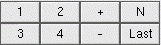

 |
SCREEN SELECTOR |
The display is organised into a number of screens. Each screen can hold upto 12 spectra (1d and 2d).
The first 12 spectra will appear on Screen 1, the next 12 will be on Screen 2 and so on.
The 1d spectra come first and then the 2d spectra. You can
display any of the first 4 screens by clicking 1 to 4 from the screen selector. To go to screen numbers
beyond that (when you have more than 48 spectra) you can use + (next screen), - (previous screen),
Last (last screen) or N (select an arbitary screen).